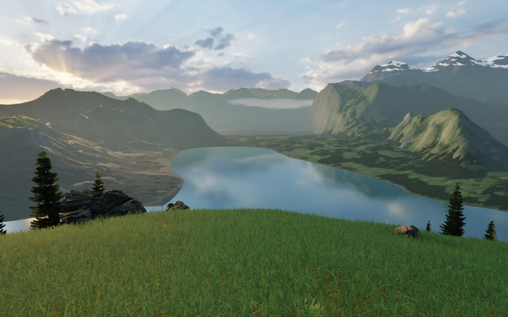
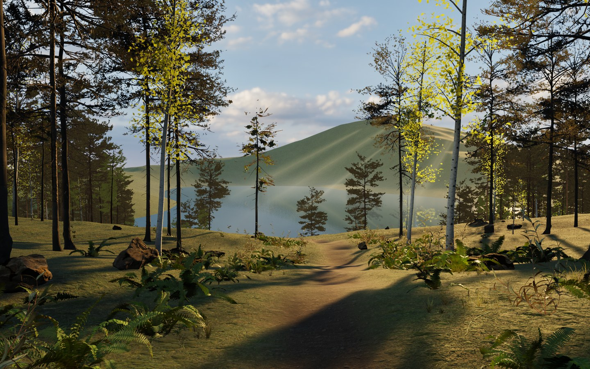

AmidNature
A quiet walk through nature
Explore an alpine lake and a sunlit forest trail at your own pace. No combat, timers or objectives. Listen to birdsong and watch gentle gusts move the nearby plants.


A quiet walk through nature
Explore an alpine lake and a sunlit forest trail at your own pace. No combat, timers or objectives. Listen to birdsong and watch gentle gusts move the nearby plants.

